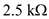
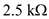

Apply Kirchhoff’s current law at non-inverting terminal of the op-amp.
Here,

…… (2)
For ideal op-amp, the voltages at inverting and non-inverting terminals are same.
The output voltage expression of an amplifier circuit is,
…… (1)
In the output voltage expression, two positive inputs and two negative inputs are there. Input voltages, and are at non-inverting terminal and input voltages, and are at the inverting terminal.
The Model circuit diagram is shown in Figure 1.
Apply Kirchhoff’s current law at non-inverting terminal of the op-amp.
Here,
…… (2)
For ideal op-amp, the voltages at inverting and non-inverting terminals are same.
Apply Kirchhoff’s current law at inverting terminal of the op-amp.
Here,
Substitute for  in the equation.
in the equation.

…… (3)
Here,
And

Equate equations (1) and (3).
…… (4)
…… (5)
…… (6)
 …… (7)
…… (7)
 .
. Recall equation (6).

Substitute  for
for  in the equation.
in the equation.
Recall equation (7).
Substitute  for
for  in the equation.
in the equation.
Calculate the value of equivalent resistance,  .
.
Recall equation (4).

Substitute  for
for  ,
,  for
for  in the equation.
in the equation.
Assume,

Recall equation (5).

Substitute  for
for  ,  for
,  for  and
and  for in the equation.
for in the equation.
Calculate the value of resistance, .

Substitute  for ,
for ,  for
for  , and
, and  for
for  in the equation.
in the equation.